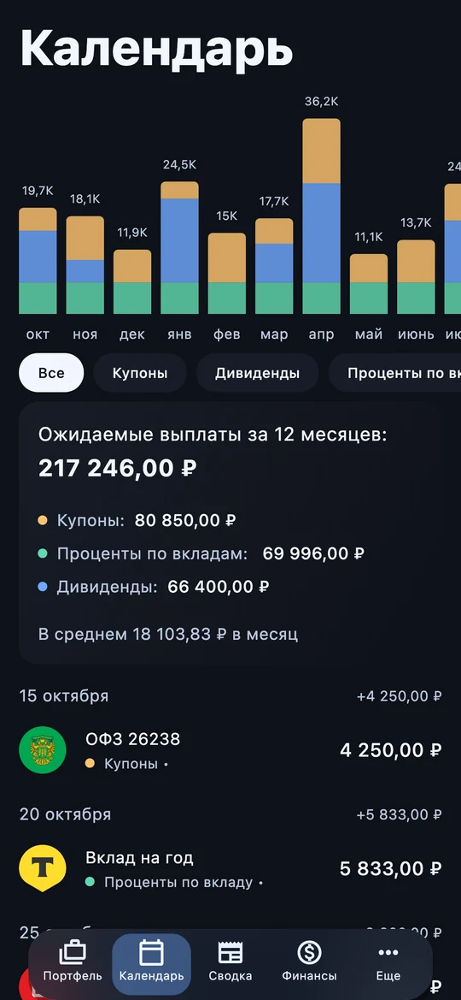

Инструкция · re:finance
Календарь дивидендов, купонов и процентов
Смотрите ожидаемые поступления по своему портфелю на ближайшие 12 месяцев. re:finance объединяет дивиденды, купоны и проценты по банковским вкладам в календаре.
Какие события показывает календарь
Календарь строится по добавленным активам, а не по всем бумагам рынка. Поэтому сначала нужно добавить инвестиционный портфель или вклад.
- Дивиденды по акциям. Ожидаемые выплаты по бумагам портфеля.
- Купоны по облигациям. Поступления по доступному расписанию выпусков.
- Проценты по вкладам. Начисления по сохранённым условиям вкладов.
- Оферты и погашения. События облигаций, которые важно учитывать при планировании.
Возврат номинала облигации или тела вклада отличается от процентного дохода. При оценке будущего денежного потока смотрите не только общую сумму, но и тип события.
Как посмотреть будущие выплаты
- Добавьте активы и проверьте количество бумаг, историю операций и условия вкладов.
- Откройте вкладку «Календарь». На графике видны суммы по месяцам, в списке — события по датам.
- Выберите месяц, чтобы рассмотреть его поступления отдельно, или используйте общий прогноз.
- Отфильтруйте типы событий: например, оставьте дивиденды и купоны, когда оцениваете процентный доход.
- Откройте событие, чтобы перейти к сведениям об инструменте или условиям вклада.
Если ожидаемой выплаты нет, сначала проверьте наличие инструмента в портфеле, количество бумаг, фильтры календаря и доступность расписания. Отсутствие события не доказывает отсутствие обязательств у эмитента.
Почему прогноз может меняться
Ожидаемая выплата — ещё не полученный доход. Эмитент может изменить условия или даты, часть сумм может быть оценочной, а сведения — поступить с задержкой.
У облигаций с плавающим купоном будущая сумма может зависеть от ставки, которая ещё не определена. У дивидендов нужно различать прогноз, объявленную выплату и фактическое зачисление. Дата в календаре и день поступления денег через брокера также могут различаться.
Календарь помогает планировать поступления, но не гарантирует сумму и срок. Перед решением сверяйте сведения с брокером, эмитентом и условиями выпуска. Для фактического результата инвестиций используйте историю полученных выплат и аналитику доходности.
Частые вопросы о календаре инвестора
Можно ли смотреть только купоны?
Да. Используйте фильтр типов событий календаря, чтобы отделить купоны от дивидендов, процентов по вкладам и других поступлений.
Видны ли проценты по банковскому вкладу?
Да, если вклад добавлен в приложение и заданы его условия. Проверьте даты, ставку и график начисления: от них зависит ожидаемый результат.
Можно ли сохранить прогноз картинкой?
Да. В календаре есть действие «Поделиться» для создания инфографики будущих выплат. Перед отправкой проверьте выбранный период и фильтры; суммы и даты остаются прогнозными.
